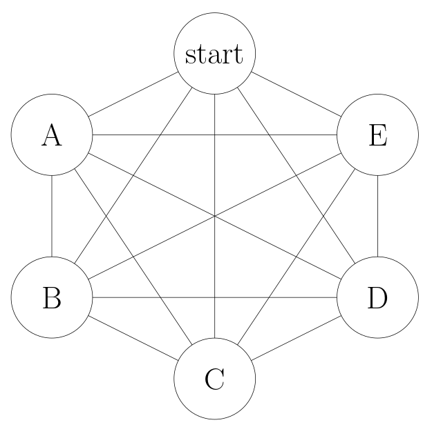
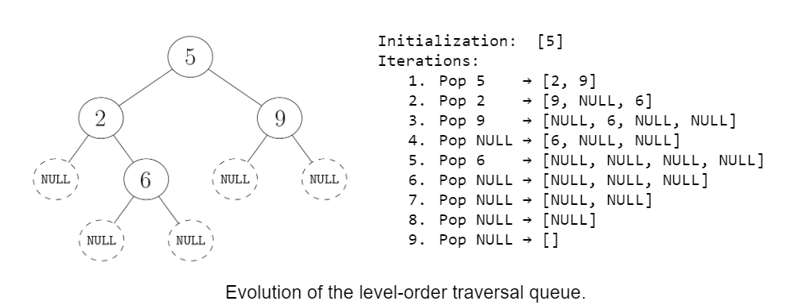

Return to the blog's main page.
Lazy vs Eager Algorithms
Warning: I have not tested any code snippet below. Please let me know if you find a bug.
Introduction
Most algorithms have multiple valid implementations. For instance, in a binay tree problem, you have multiple ways of handling NULL nodes. I'm currently writing Beyond Cracking the Coding Interview (beyondctci.com), which means that my co-authors and I need to take a stance on what version of each algorithm to use. Ideally, we want to show the simplest version of each algorithm:
- Easy to recall for interview,
- Easy to explain to interviewers,
- Easy to debug by hand,
- Short, so that it is quick to code.
In the book, we don't claim that the version we show is "the best" - we say to use the one that works best for you. But showing one in the book is an implicit endorsement.
One particular decision that comes up again and again with recursive algorithms is choosing between the lazy version and the eager version of an algorithm.
- An eager recursive function expects 'valid' inputs and ensures to only call the recursive function with 'valid' inputs. We can also call it a clean (call) stack algorithm.
- A lazy recursive algorithm allows 'invalid' inputs, so it starts by validating the input. Then, it calls the recursive function without validating the inputs passed to it. We can also call it a dirty stack algorithm.
What 'valid' means depends on the algorithm--we'll see plenty of examples. We'll also translate the concept of eager vs lazy to iterative algorithms.
Lazy vs Eager Tree Traversals
An eager tree traversal eagerly validates that the children are not NULL before passing them to the recursive function. A lazy tree traversal doesn't, so it needs to check if the current node is NULL before accessing it.
For instance, here is eager vs lazy preorder traversal:
class Node:
def __init__(self, val, left=None, right=None):
self.val = val
self.left = left
self.right = right
def preorder_traversal_eager(root):
res = []
# CANNOT be called with node == None
def visit(node):
res.append(node.val)
if node.left:
visit(node.left)
if node.right:
visit(node.right)
if not root:
return []
visit(root)
return res
def preorder_traversal_lazy(root):
res = []
# CAN be called with node == None
def visit(node):
if not node:
return
res.append(node.val)
visit(node.left)
visit(node.right)
visit(root)
return resBoth have the same runtime and space analysis. Even the constant factors probably don't change much, so it comes down to style preference. Which one do you prefer?
Lazy vs Eager graph DFS
An eager graph DFS eagerly checks that the neighbors are not already visited before passing them to the recursive function. A lazy graph DFS doesn't, so it needs to check if the current node is already visited.
# Returns all nodes reachable from start
def dfs_eager(adj_lists, start):
res = []
visited = set()
def visit(node):
res.append(node)
for neighbor in adj_lists[node]:
if neighbor not in visited:
visited.add(neighbor)
visit(neighbor)
visited.add(start)
visit(start)
return res
def dfs_lazy(adj_lists, start):
res = []
def visit(node):
if node in visited:
return
visited.add(node)
res.append(node)
for neighbor in adj_lists[node]:
visit(neighbor)
visit(root)
return resFor a graph DFS, we can also do a mix between lazy and eager: we can eagerly check if nodes are already visited, and lazily mark them as visited:
def dfs_lazy(adj_lists, start):
res = []
visited = set()
def visit(node):
visited.add(node)
res.append(node)
for neighbor in adj_lists[node]:
if neighbor not in visited:
visit(neighbor)
visit(root)
return resAgain, they all have the same analysis. Which one do you prefer?
Lazy vs Eager grid algorithms
Consider the same DFS algorithm but on a grid of 0's and 1's. The 0's
are walkable cells, the 1's are obstacles, and
walkable cells next to each other are connected. This time, we need to
check that the neighbors are not out of bounds, which we can do lazily
or greedily.
# Returns all cells reachable from (start_row, start_col).
def grid_dfs_eager(grid, start_row, start_col):
nr, nc = len(grid), len(grid[0])
res = []
visited = set()
def visit(row, col):
res.append((row, col))
for dir in ((-1, 0), (1, 0), (0, 1), (0, -1)):
r, c = row + dir[0], col + dir[1]
if 0 <= r < nr and 0 <= c < nc and grid[r][c] == 0 and (r, c) not in visited:
visited.add((r, c))
visit(r, c)
# Assumes (start_row, start_col) is within bounds
visited.add((start_row, start_col))
visit(start_row, start_col)
return res
def grid_dfs_lazy(grid, start_row, start_col):
nr, nc = len(grid), len(grid[0])
res = []
visited = set()
def visit(row, col):
if row < 0 or row >= nr or col < 0 or col >= nc or grid[row][col] == 1:
return
if (row, col) in visited:
return
visited.add((row, col))
res.append((row, col))
for dir in ((-1, 0), (1, 0), (0, 1), (0, -1)):
visit(row + dir[0], col + dir[1])
visit(start_row, start_col)
return resLazy vs Eager Memoization DP
In a lazy memoization DP (Dynamic Programming) algorithm, we call the recursive function for a subproblem without checking first if we have already computed that subproblem. In an eager algorithm, we only call the recursive function for subproblems that we still need to compute.
# Returns all cells reachable from (start_row, start_col).
def fibonacci_eager(n):
memo = {}
def fib_rec(i):
if i <= 1:
return 1
if i-1 in memo:
prev = memo[i-1]
else:
prevprev = fib_rec(i-1)
if i-2 in memo:
prevprev = memo[i-2]
else:
prev = fib_rec(i-2)
memo[i] = prev + prevprev
return memo[i]
return fib_rec(n)
def fibonacci_lazy(n):
memo = {}
def fib_rec(i):
if i <= 1:
return 1
if i in memo:
return memo[i]
memo[i] = fib_rec(i-1) + fib_rec(i-2)
return memo[i]
return fib_rec(n)For memoization DP, I think lazy is cleaner and more conventional.
Lazy vs Eager Iterative Tree traversals
Consider a level-order traversal on a binary tree. A level-order traversal is an iterative algorithm that uses a queue data structure.
- A lazy version puts children in the queue without checking if they are NULL first. We can call it a dirty queue algorithm.
- An eager version checks for NULL nodes and avoids putting them in the queue. We can call it a clean queue algorithm.
def level_order_traversal_eager(root):
if not root:
return []
res = []
Q = deque([root])
while Q:
node = Q.popleft()
res.append(node.val)
if node.left:
Q.append(node.left)
if node.right:
Q.append(node.right)
return res
def level_order_traversal_lazy(root):
res = []
Q = deque([root])
while Q:
node = Q.popleft()
if not node:
continue
res.append(node.val)
Q.append(node.left)
Q.append(node.right)
return resEager Graph BFS is better than lazy Graph BFS
This is the first exception where one is better than the other in terms of big O analysis. The lazy BFS allows adding already-visited nodes to the queue, while the eager one does not. We'll first look at the two versions, and then analyze them.
def graph_bfs_eager(adj_lists, start):
res = []
visited = set()
visited.add(start)
Q = deque([start])
while Q:
node = Q.popleft()
res.append(node.val)
for neighbor in adj_lists[node]:
if neighbor not in visited:
visited.add(neighbor)
Q.append(neighbor)
return res
def graph_bfs_lazy(adj_lists, start):
res = []
visited = set()
Q = deque([start])
while Q:
node = Q.popleft()
if node in visited:
continue
visited.add(node)
res.append(node)
for neighbor in adj_lists[node]:
Q.append(neighbor)
return resIt may come as a surprise that these two are not equivalent like all the other examples.
Let's say V is the number of nodes and E is
the number of edges. To keep things simple, consider that the graph is
connected, meaning that E is at least
V-1 and at most O(V^2).
Both versions take O(E) time. The difference is in the
space complexity: the eager version takes O(V) space
because we never have the same node twice in the queue. The lazy
version takes O(E) space because we allow the same nodes
multiple times in the queue.
To see this, consider a complete graph:

-
When we visit start, we add A, B, C, D, E to the queue. Now the
queue is:
[A, B, C, D, E] -
When we visit A, we add start, B, C, D, E to the queue. Now the
queue is:
[B, C, D, E, start, B, C, D, E] -
When we visit B, we add start, A, C, D, E to the queue. Now the
queue is:
[C, D, E, start, B, C, D, E, start, A, C, D, E] - And so on.
By the time we finish popping the nodes added as neighbors of the
start node, we've done V queue pops and
V^2 queue appends, so the queue size is
O(V^2).
So, why didn't this happen for other lazy algorithms we have seen?
- For tree traversals, each tree node has a single parent that it can be reached from, so we don't need to worry about the same node appearing twice in the call stack or in the level-order traversal queue.
-
For graph DFS, every node in the call stack is
marked visited, so if we call
visit()on a node that is already in the call stack, we'll immediately return as we'll see it is marked as visited.
Eager Dijkstra is better than Lazy Dijkstra, but harder to implement
I wrote extensively about different Dijktsra implementations in this Dijkstra blog post.
Dijkstra is similar to BFS, with the main difference that it uses a priority queue (PQ) instead of a queue to visit the nodes that are closer first (in terms of shortest paths).
In BFS, when a node is added to the queue, its distance from the starting node is already established and there is never a reason to add it again to the queue. In Dijkstra, when a node is added to the PQ, we might later find a shorter path while it is still in the PQ. When that happens, we can do two things:
- Lazy Dijkstra: just add the node again with the new, improved distance. It will get popped before the previous occurrence because it has higher priority in the PQ. When a node with a "stale" distance gets popped off from the queue, we just ignore it.
- Eager Dijkstra (called textbook Dijkstra in the other blog post): instead of adding the node again, find the existing occurrence of it in the PQ, and update it with the new found distance. This guarantees that the same node never appears twice in the PQ.
Both versions take O(E*log V) time, but eager is more
space efficient, analogously to eager BFS: O(V) for eager
Dijkstra vs O(E) for lazy Dijkstra.
Here is lazy Dijkstra:
def dijkstra_lazy(adj_lists, start):
dist = defaultdict(int)
dist[start] = 0
visited = set()
PQ = [(0, start)]
while PQ:
_, node = heappop(PQ) # Only need the node, not the distance.
if node in visited:
continue # Not the first extraction.
visited.add(node)
for neighbor, weight in adj_lists[node]:
if dist[node]+weight < dist[neighbor]:
dist[neighbor] = dist[node]+weight
# Neighbor may already be in the PQ; we add it anyway.
heappush(PQ, (dist[neighbor], neighbor))
return dist
Unfortunately, eager Dijkstra is not so easy to implement in Python
because we are missing the decrease_key() operation in a
heap (and Python does have a self-balancing BST data structure, which
can also be used for eager Dijkstra). You can see a BST-based C++
implementation in my other blog post.
The dijkstra_lazy() algorithm above is more or less
standard and it has been known as "lazy Dijkstra" for a while.
However, it is possible to make an even lazier version which has the
same runtime and space analysis (but likely bigger constant factors).
The idea is that instead of only adding to the PQ the neighbors for
whom we find an improved distance, we can simply add all of them, and
discard duplicates once we extract them from the PQ:
def dijkstra_super_lazy(adj_lists, start):
dist = defaultdict(int)
dist[start] = 0
PQ = [(0, s)]
while PQ:
d, node = heappop(PQ)
if dist[node] != math.inf: continue
dist[node] = d
for neighbor, weight in adj_lists[node]:
heappush(PQ, (dist[node]+weight, neighbor))
return distSo, Lazy or Eager?
We could keep looking at lazy vs eager algorithms, but I'll stop here. In aggregate, these are the pros and cons that I see:
Pros of lazy algorithms
- Lazy algorithms require less code. This is because you only need to validate the parameters of the recursive function once at the beginning, instead of validating what you pass to each recursive call. This is specially true in binary tree problems, where you usually have two recursive calls. It doesn't apply as much for graphs.
- Lazy algorithms require less indentation. For instance, in graph problems, we don't need to do checks inside the for loop over the neighbors.
- Lazy algorithms do not require special handling for the first recursive call. You don't need to worry about things like checking if the root is NULL or marking the start node as visited.
- Lazy recursive functions have simpler preconditions. You can just pass anything to them, and they work.
Pros of eager algorithms
- For a graph BFS, eager has a better space complexity. This is a case where eager is objectively better. (Eager Dijkstra is also better but it is not expected to be implemented in interviews. Your interviewer is probably expecting lazy Dijkstra.)
- Eager algorithms do fewer recursive calls or iterations. In a binary tree, the number of NULL nodes is always one more than the number of internal nodes. This means that a lazy traversal does twice as many recursive calls/iterations as the eager counterpart. This could make a big difference if you want to debug the code manually. For instance, in this picture, you can see that adding NULLs to the queue makes visualizing the steps more painful:

- Eager algorithm can 'feel safer'. A friend commented that, with a lazy algorithm, they feel like they are missing an edge case.
My preference
Here are my personal preferences for coding interviews (not those of the other authors of 'Beyond Cracking the Coding Interview'):
Strong preferences:
- For BFS, use eager. This one is clear cut.
- For memoization DP, use lazy. It is much cleaner to code.
- For Dijkstra, use lazy Dijkstra (not super lazy Dijkstra). It is what is realistic to do in an interview and probably what the interviewer expects.
Weak preferences:
- For binary tree traversals (iterative or recursive), use lazy. It is a bit cleaner.
- For graph DFS, use eager. It is a bit more standard, and aligned with a graph BFS.
In the book, we'll definitely mention that some algorithms can be implemented in a lazy or eager way (in way less detail than here), and that you should choose the one that feels easier to you. But, we still need to pick one to show in the problem solutions. One idea is trying to be consistent throughout (e.g., doing all tree and graph traversals in an eager way). If you have an opinion on which one is better, please reach out! I'd love to hear it.
Return to the blog's main page.